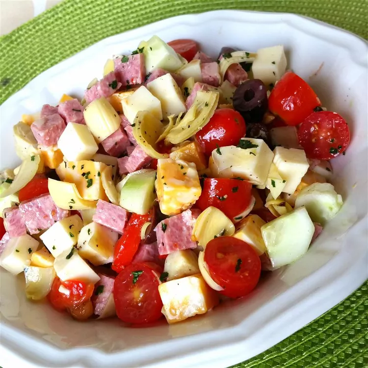

antipasto salad

how to make a wonderful antipasto salad
this is salad is the best dish to eat as an appetizer
ingredients
- 8 ounces Genoa salami, cut into bite-size pieces
- 8 ounces sopressata or other hard salami, cut into bite-size pieces
- 8 ounces sharp provolone cheese, cut into bite-size pieces
- 8 ounces fresh mozzarella cheese, cut into bite-size pieces
- 2 large tomatoes, cut into bite-size pieces
- 1 (14 ounce) can artichokes, drained and cut into bite-size pieces
- ½ (12 ounce) jar roasted red peppers
- ½ cup pitted and coarsely chopped Kalamata olives
- ¼ cup pitted and chopped green olives
- 1 tablespoon extra-virgin olive oil
- 3 tablespoons red wine vinegar
- freshly-ground black pepper, to taste
- ¼ cup fresh basil leaves
how to make
- Combine Genoa and soppressata salamis, provolone, mozzarella, tomatoes, and artichokes in a bowl. Slice roasted red peppers and add them to the bowl with about 3 tablespoons juice from the red pepper jar. Mix in chopped olives.
- Drizzle olive oil over salami mixture, followed by red wine vinegar. Season with pepper. Mix thoroughly. Store in the refrigerator until serving time.
- Before serving, tear fresh basil leaves into bite-sized pieces and fold them into salad.
- enjoy!